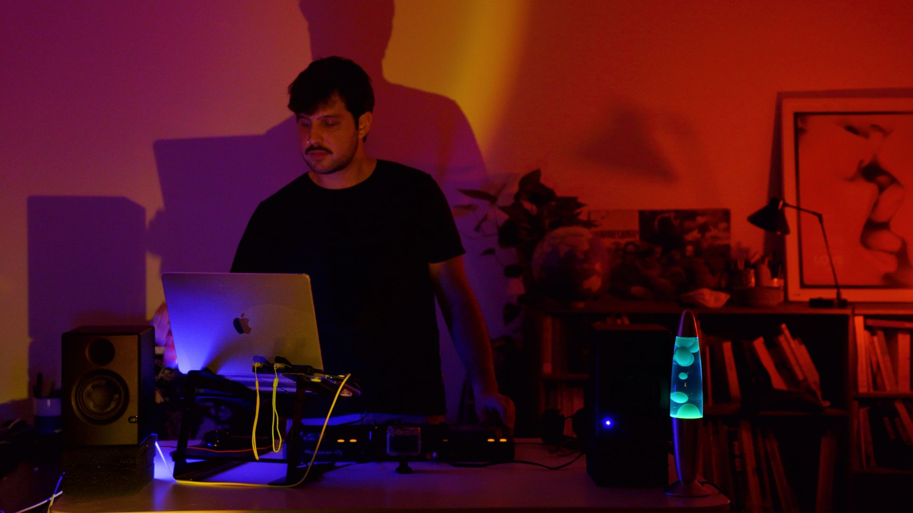
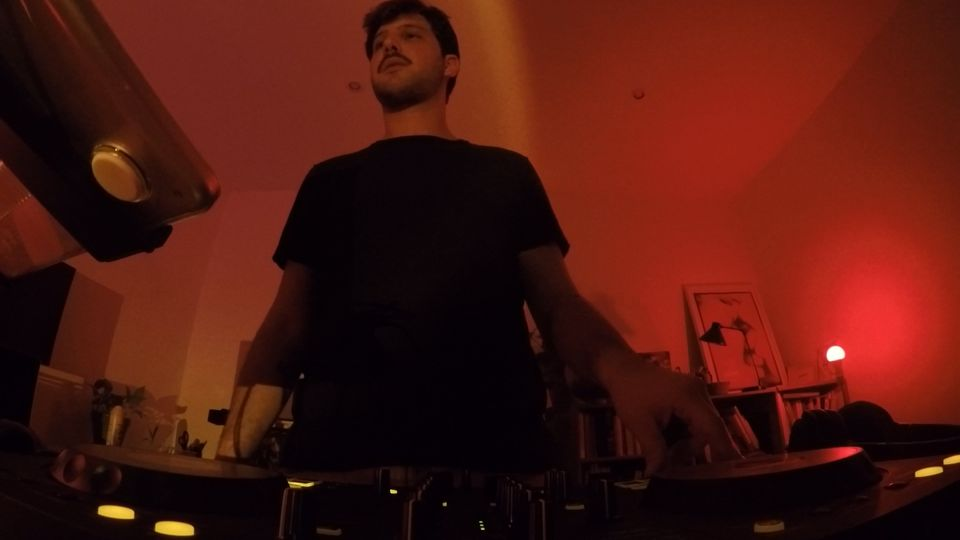

Lautaro Volcan
I shape minimal beats, deep grooves and dark ambiances into immersive sonic journeys.
Mixes
Recorded sessions from the booth. Pick one from the crate and it loads on the deck.
Ready
Choose a mix
Your browser blocked playback from the custom player. Use the SoundCloud player below instead.
Audio streamed from SoundCloud.
Videos
Two sets on camera. Press a deck to watch it here.

I'm Lautaro Ferrandi, and I play as Lautaro Volcan: an Argentine-Spanish DJ based in Barcelona.
I'm drawn to tech house, house, techno, nu disco and ambient, and I focus on building atmospheres that connect with the room. I pick tracks for their groove, their vocals and their rhythmic patterns, and dig into what makes each one work to build sets people share together.
I like sets that move across styles. I've played clubs and events in different countries, reading each crowd and each venue as it comes.
Ambient is where the introspective side comes in: it lets me fold quieter, emotional passages into a mix without losing the floor.